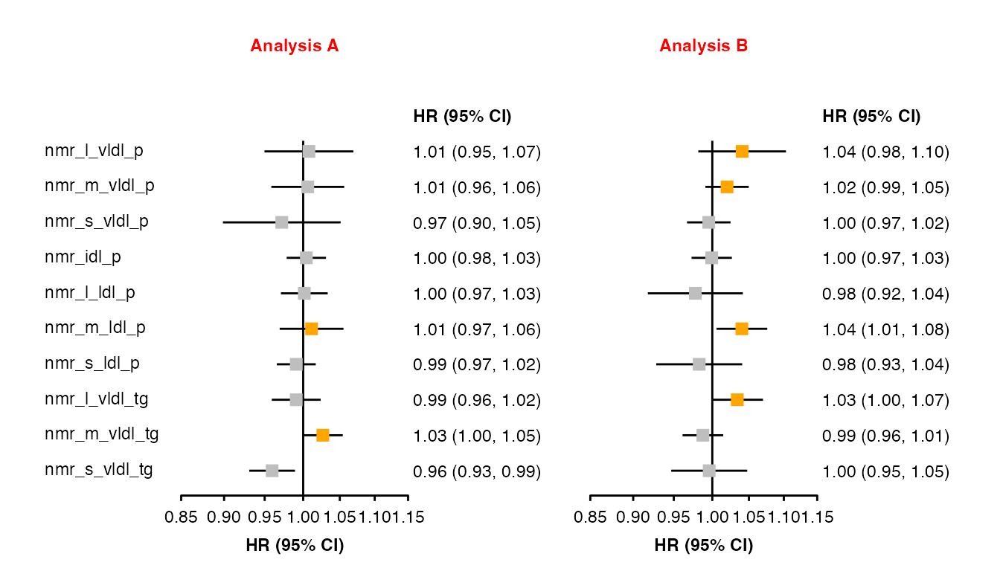
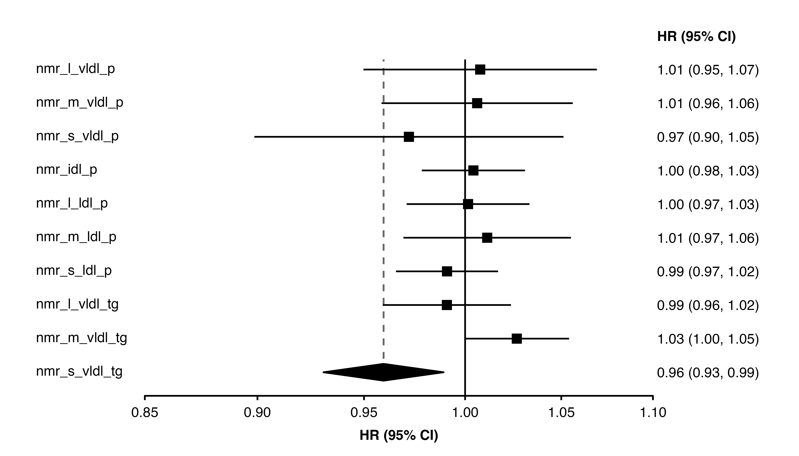

The shape_plot() and forest_plot()
functions generate code to produce plots. Beyond the function arguments,
there are some further methods to change the generated code to produce
customised plots.
Adding layers
The plots returned by shape_plot() and
forest_plot() are ggplot objects, so you can use
+ to add more layers or adjust the theme.
forest <- forest_plot(panels = list(resultsA, resultsB),
col.key = "variable",
panel.headings = c("Analysis A", "Analysis B"),
showcode = FALSE,
printplot = FALSE)
#> ℹ Narrow confidence interval lines may become hidden in the forest plot.
#> ℹ Please check your final output carefully and see
#> vignette("forest_confidence_intervals") for more details.
#> This message is displayed once per session.
forest$plot +
annotate(geom = "segment",
x = 0.71,
y = 1,
xend = 1.4,
yend = 1) +
annotate(geom = "polygon",
x = c(0.85, 1.37, 1.37, 0.85),
y = c(-0.5, -0.5, -1.5, -1.5),
fill = NA,
colour = "orange") +
theme(plot.background = element_rect(fill = "lightblue"))
Adding aesthetics and arguments (the addaes and addarg arguments)
The addaes and addarg arguments in shape_plot() and
forest_plot() can be used to add additional aesthetics and
arguments code to the ggplot layers created by the functions. These
arguments must be named lists of character strings, and the names of
elements defines where the aesthetics/arguments code is added.
In shape_plot() the following names will add aesthetics
and arguments to layers:
| name | layer that plots |
|---|---|
| lines | lines of linear fit through estimates |
| point | point estimates |
| estimates | text of estimates |
| n | text of number of events (n) |
| ci | confidence intervals |
In forest_plot() the following names will add aesthetics
and arguments to layers:
| name | layer that plots |
|---|---|
| ci | confidence intervals |
| point | point estimates |
| col.right | col.right columns |
| col.left | col.left columns |
| xlab | x-axis label |
| panel.name | names above panels |
Where duplicate aesthetics/arguments might be defined and created, they are kept with the priority:
- Aesthetic arguments specified using addaes and addarg
- Aesthetic arguments created by the function
- Other arguments specified using addaes and addarg
- Other arguments created by the function
This can be used to ‘overwrite’ some of the code that would otherwise
be produced by shape_plot() and
forest_plot().
Example
forest_plot(panels = list(resultsA, resultsB),
col.key = "variable",
panel.headings = c("Analysis A", "Analysis B"),
ciunder = TRUE,
addarg = list(panel.name = "colour = 'red'"),
addaes = list(point = "colour = dplyr::if_else(estimate_transformed > 1.01, 'orange', 'grey')"))
Adding code (the addcode argument)
The addcode argument in shape_plot() and
forest_plot() can be used to add additional code to the
plot code created by the functions.
The argument should be a character vector. The first element defines where the code is added. It will be matched (as a regular expression) to the first line of the generated code (trimmed of any whitespace). The remaining elements will then be inserted as code just before this line. For example, to insert code before the line “# Plot points at the transformed estimates”, set “# Plot points at the transformed estimates” as the first element.
Example
We wish to use geom_segment() to add dashed lines to the
plot, and these should be added to the plot before the point
estimates:
code_to_add <- c('# Add vertical dashed lines',
'geom_segment(aes(x = estimate_transformed,',
' xend = estimate_transformed,',
' yend = -0.7),',
' linetype = "dashed",',
' colour = "grey40",',
' data = ~ dplyr::filter(diamonds, key %in% c("nmr_s_vldl_tg"))) +',
'')
forestplot1 <- make_forest_plot(panels = list(resultsA),
col.key = "variable",
exponentiate = TRUE,
panel.names = c("Analysis A"),
diamond = c("nmr_s_vldl_tg"),
addcode = c("# Plot points at the transformed estimates",
code_to_add))
The data.function argument
In forest_plot(), the data.function
argument can be used to apply a defined function to the data frame
immediately before the ggplot2 code.
Example
We want to manipulate the plot data before creating the plot:
change_plot_data <- function(data){
dplyr::mutate(data,
auto_estcolumn = gsub("\\(", "[", auto_estcolumn),
auto_estcolumn = gsub("\\)", "]", auto_estcolumn))
}
forest_plot(panels = list(resultsA, resultsB),
col.key = "variable",
panel.headings = c("Analysis A", "Analysis B"),
exponentiate = TRUE,
data.function = "change_plot_data")Changing the code vector and evaluating
The shape_plot() and forest_plot()
functions return plot code in a character vector. You could change
elements of the vector to customise the code, then parse and evaluate it
using eval(parse(text = plotcode)).